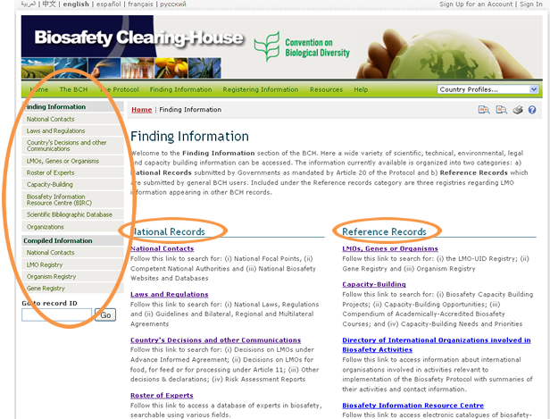

URL: http://bch.cbd.int/database/
Under Article 20, the BCH was established to facilitate the exchange of information about LMOs. The requirements for the types of information are listed in this Article and the BCH maintains databases with the relevant information. Access to this information is provided through the Finding Information page of the BCH website, which can be found through a link on the navigation bar of the BCH.

This section allows users to access a wide variety of scientific, technical, environmental, legal and capacity building information from the BCH databases. The categories of information are listed on the Finding Information page.
The main page of the Finding Information section contains a welcome message and a list of the information available which is divided into two groups. The left-hand group lists categories of National Records, which are submitted by Governments as mandated by Article 20 of the Protocol. The right-hand group lists categories of Reference Records, which are submitted by general BCH registered users. Both groups of information also appear in the Finding Information section of the left-hand menu. The Compiled Information section of the left-hand menu provides access to compiled records and listings.
The following chapters provide a general guide to the usage of the search pages, followed by an insight specifically into each of the categories of information and on how to access information from each database.